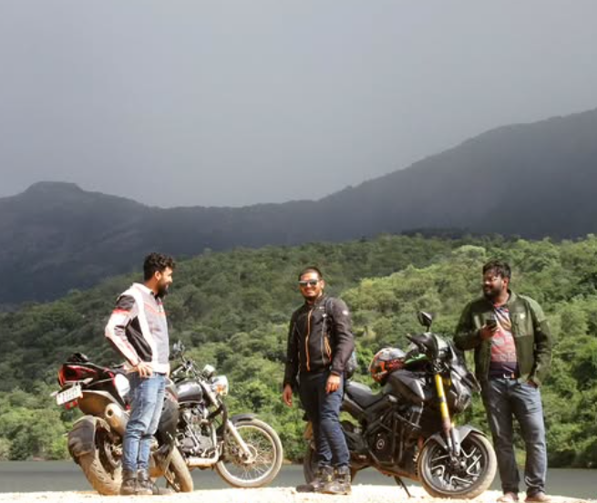
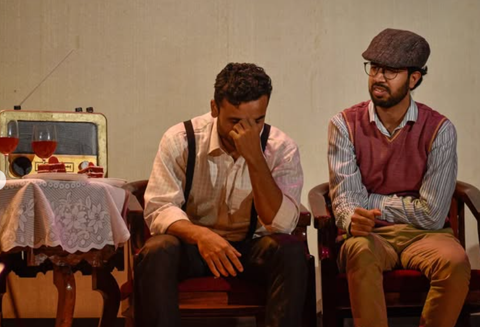

Outreach & Hobbies

Motorcycling & Hiking
I unwind by exploring the Western Ghats on my motorcycle and hiking through lush trails. These adventures fuel my curiosity and resilience.


Theatre (Rangmanch)
As a member of Rangmanch, the IISc drama club, I explore characters and narratives on stage — an energising counterpoint to analytical research.

Science Communication
I produce neuroscience reels in my vernacular language and founded ScholarOP, a community of 4k researchers across LinkedIn & Instagram. Follow me for accessible science!